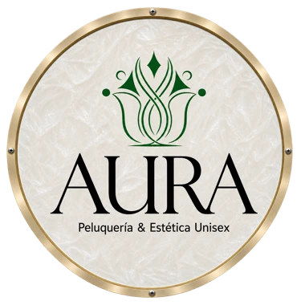

Valorar mi cabello
Cuéntanos qué acabado deseas.
Conocer más
AURAORGANIC SALÓNMenos encrespamiento, más tú
Para quienes buscan una melena más manejable y un acabado pulido. Antes de elegir un tratamiento de keratina, estudiamos tu cabello y hablamos del resultado que quieres conseguir.
BELLEZA CON RAÍCES · EL SAUZAL
Nuestra forma de hacerlo
«El tratamiento empieza mucho antes de aplicarlo: empieza escuchándote.»
Menos encrespamiento, más tú
A veces buscas suavidad; otras, reducir el encrespamiento o simplificar el peinado. Conocer el objetivo evita confundir un cuidado nutritivo con un tratamiento de alisado.
La denominación «keratina» puede abarcar protocolos diferentes. Te explicamos qué producto se propone, cómo se aplica y qué acabado podemos esperar en tu cabello.
Revisamos el estado de la fibra y preguntamos por decoloraciones, alisados y otros servicios anteriores. Esa información es importante aunque el tratamiento se haya realizado hace tiempo.
El largo, la densidad y el estado del cabello influyen en el tiempo de trabajo y el presupuesto. Por eso preferimos concretar el servicio tras valorar tu melena.

Menos encrespamiento, más tú
Una vez acordado el tratamiento, el equipo aplica el protocolo correspondiente y realiza el acabado indicado. Podrás preguntar durante la cita todo lo que necesites saber sobre tu cabello.
No prometemos un resultado idéntico para todas las texturas. El acabado y su evolución dependen del producto, del cabello de partida y de los cuidados posteriores.
Antes de salir te indicamos cuándo lavar el cabello, qué productos utilizar y qué precauciones seguir según la fórmula aplicada. No todas las keratinas tienen las mismas instrucciones.
Comenta si nadas con frecuencia, usas plancha o tienes una próxima cita de color. Organizar esos hábitos y servicios permite plantear una rutina coherente.
Hecho en AURA
Sin dudas, sin prisas
Si hay algo más que quieras saber,
estamos al otro lado.
Depende del protocolo, el tipo de cabello, la frecuencia de lavado y los cuidados. El equipo podrá darte una orientación concreta después de valorar tu caso.
Hay que revisar la compatibilidad y el estado del cabello. Indica tus tratamientos anteriores al reservar y acuerda el orden de los servicios con el equipo.
No siempre. El objetivo y el acabado dependen del tratamiento elegido y de tu textura. Antes de empezar aclaramos si buscas suavizar, controlar el encrespamiento o un efecto más liso.
Es una denominación que debe acompañarse de información sobre el producto concreto. Puedes consultar su composición y las indicaciones de uso en el salón; no equivale a ausencia de ingredientes químicos.
Hay un momento que es solo tuyo
Cuéntanos qué necesitas. Nosotras ponemos
el tiempo, las manos y el cuidado.